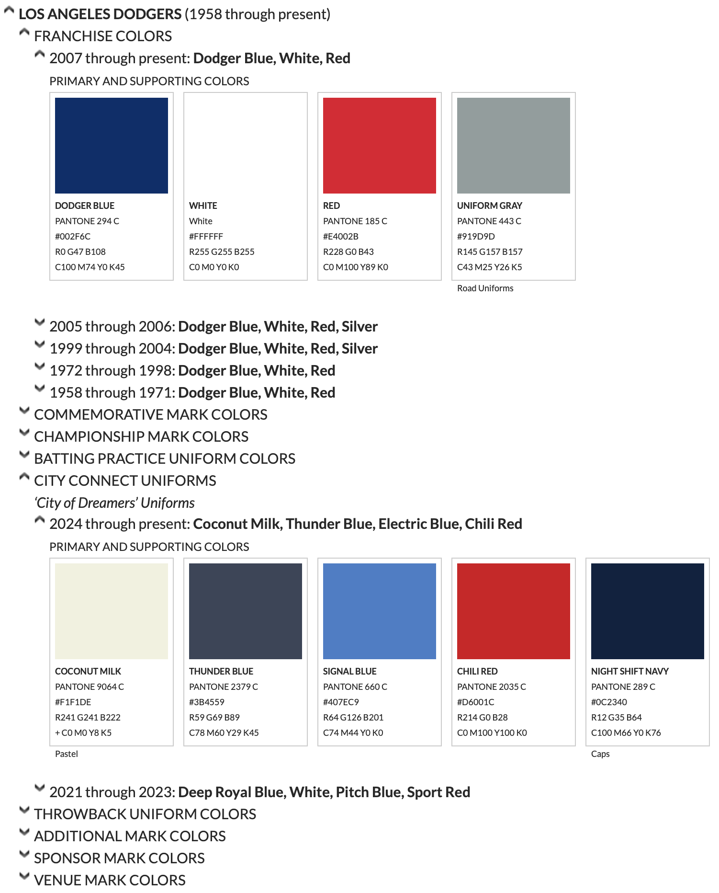
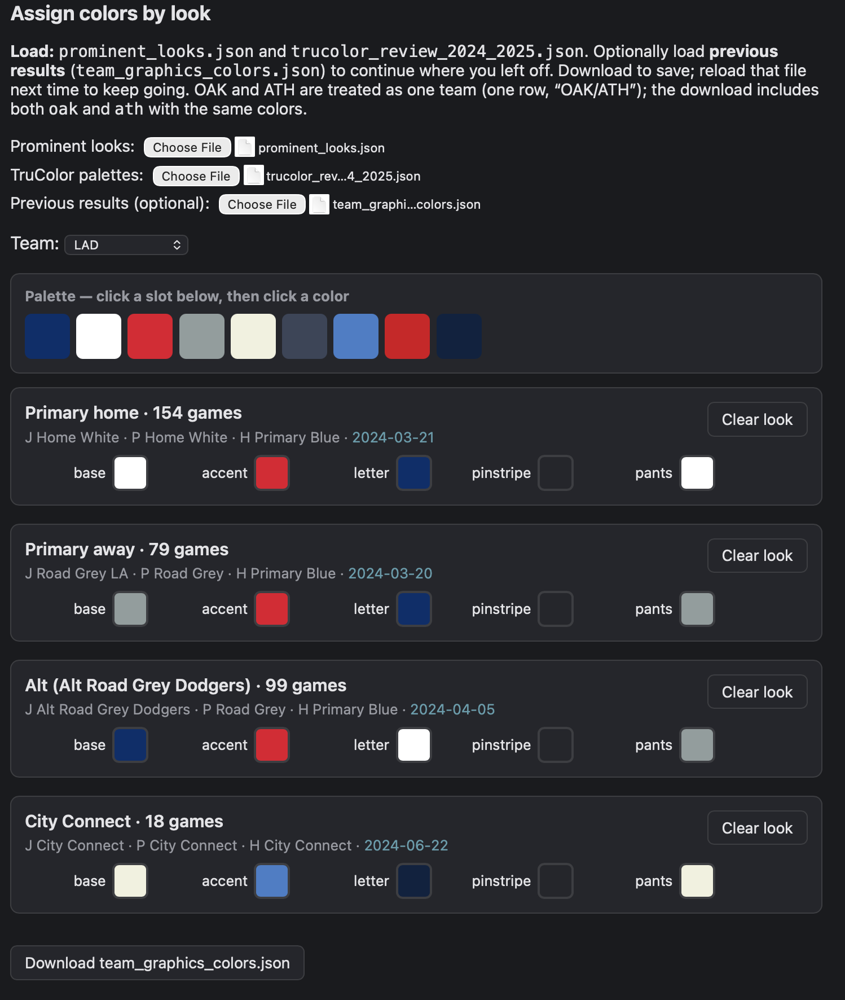
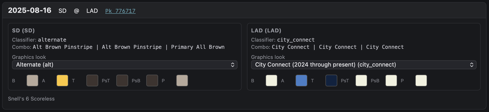
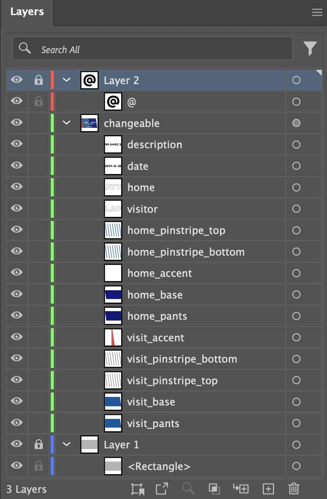
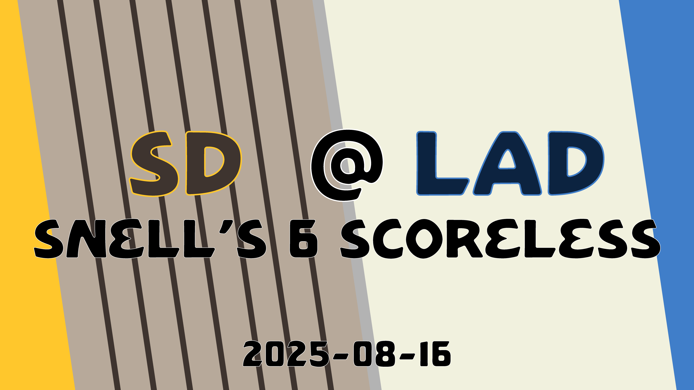

Custom MLB Video Title Cards
I keep some recordings of MLB games to watch - they come in particularly handy in the off-season, while I ride a trainer in the garage and think of warmer days. Regardless, I wanted a small title card on the front of each one: teams, date, a one-liner about the game. Rather than styling a bunch of Adobe Illustrator files by hand, I wanted to automate what I could - Illustrator has some scripting functionality of I was previously unaware. I knew what games I had recorded. My ideal title cards would have team/uniform colors for the two sides - even better if it represented the uniforms they wore for the actual games. MLB has a bunch of APIs. I'm computer-ly inclined. Couldn't be too bad, right?
So, the adventure began. MLB's API publishes what teams are wearing per game (text like "Dodgers City Connect Jersey") but no other relevant details about that uniform. No RGB, no palette ids, nothing graphics-oriented. You'd think they would, but not for us commoners. I could go to each team's page, and see what could be found, but somebody had to have something out there.

TruColor did. I was totally unfamiliar with them, but two pages came to the rescue: AL and NL. The pages have WAY more than I needed, but at least they're specific, referenced, and consistent. I scraped those and narrowed to the seasons I care about.
Then I categorized each team's per-game uniform text into rough buckets (primary home, road, alt, City Connect (including those with two), etc).

With the help of a HTML picker, I used those uniform buckets and the previously-scraped per-team colors to figure out which colors belong to which uniform combos.
Unfortunately, the categorizer isn't perfect - sometimes it calls a home team "road grey," and a few promo jerseys have no palette at all. To patch that 10%, I made a little review page that would let me override a game's selections with a different uniform combo.

Lastly, I needed to create an Illustrator script (JSX) that would combine this per-game data with an actual Illustrator image file. The script was nasty, but the image file was dead-simple: every layer name matched a CSV column, and the script matches things up.

One game end-to-end - 2025-08-16, Padres @ Dodgers, "Snell's 6 Scoreless" (MLB gamePk 776717):
- StatsAPI uniforms endpoint returns
Dodgers City Connect JerseyandPadres Alt Brown Pinstripe Jersey. - Categorize ->
city_connectfor LAD,alternatefor SD. - Bucket -> colors: LAD
city_connect(2025-through-present block) = white base, blue accents; SDalt= brown pinstripes. - CSV row -> Illustrator template -> PNG:

The longest part was definitely matching up the colors by hand with the various looks per team. So, that's the piece I'm sharing. If you want the colors file on its own, it's on Github, or attached here: mlb_team_uniform_colors.json. It has hex slots per team per look (home, away, alt, city_connect, city_connect_2 when a team has two eras), plus AL and NL for All-Star games. I guess I'm open to corrections on this, but my focus was simply to share. Remember: it was eyeballed by a guy sitting on his couch distracted by whatever was on the TV, so it's not official by any stretch. Use at your own risk/benefit.
A few things I'm pleased with:
- The process was static and offline after the initial data pull.
- City Connect selection by calendar year for those troublesome teams with multiple.
- Layer-name-matches-column is the smallest useful contract between the CSV and the template.
- A good excuse to use Grandsans from Dan Cederholm Simplebits.
This twenty minute "just pull colors from the API" project was a great several-hours-across-multiple-months project. At least my video files will look better next winter, and maybe I'll have something I can reuse later.
More digging
After publishing, I kept poking around and found a couple of things worth sharing.
www.mlbstatic.com hosts team logo SVGs in several variants (primary, cap, wordmark, roundel) organized by team ID. fetch_team_logos.py (Github) grabs them.
The Gameday pitch view renders a batter figure that actually changes per uniform. Those images are on prod-gameday.mlbstatic.com as palette-indexed PNGs -- the colors used in the render are embedded right in the file's palette. The Stats API (/uniforms/game, /uniforms/team) provides the asset codes. fetch_uniform_assets.py (Github) fetches them by game, team, or season.
extract_uniform_colors.py (Github) tries to pull a representative hex color from each downloaded PNG by sampling the fabric regions and doing some HSV math. The results are in the right hue ballpark, but the silhouettes are 3D renders with shading baked in, so the output skews darker than the real fabric. Useful for identifying what color family a uniform is in; not a substitute for the real brand specs.
- Prior: Voronoi Art Generator